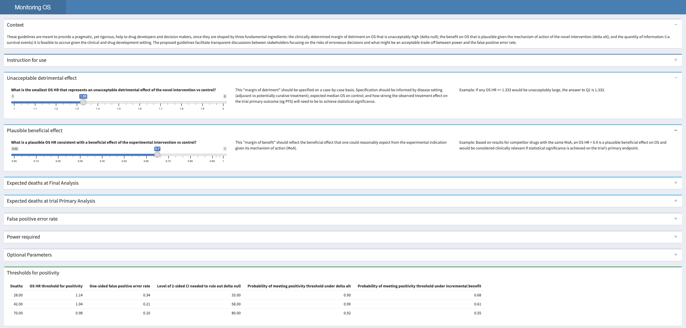

These guidelines are meant to provide a pragmatic, yet rigorous, help to drug developers and decision makers, since they are shaped by three fundamental ingredients: the clinically determined margin of detriment on OS that is unacceptably high (δnull); the benefit on OS that is plausible given the mechanism of action of the novel intervention (δalt); and the quantity of information (i.e. events, expected number of survival events, at primary and final analysis) it is feasible to accrue given the clinical and drug development setting. The proposed guidelines facilitate transparent discussions between stakeholders focusing on the risks of erroneous decisions and what might be an acceptable trade-off between power and the false positive error rate.
Monitoring guidelines assume that the hazard ratio (HR) can adequately summarize the size of the benefits and harms of the experimental intervention vs control on overall survival (OS). Furthermore, guidelines assume that an OS HR < 1 is consistent with a beneficial effect of the intervention on OS (and smaller OS HRs <1 indicate increased efficacy). For more details about how OS monitoring guidelines are formulated, please refer to our paper.
If you find this repository useful, please consider giving a star! ⭐
Installation
You can install the development version of monitOS like so:
install.packages('monitOS')Shiny app
The recommended way to use monitOS is to run its integrated shiny app. It can done simply call the wrapper function using:
monitOS::run_app()The shiny app, as seen below, is designed to guide users through their trial designs.

Examples
These are basic examples on using monitOS:
library(monitOS)
# Example 01: OS monitoring guideline retrospectively applied to Motivating Example 1
# with delta null = 1.3, delta alt = 0.80, gamma_FA = 0.025 and beta_PA = 0.10.
>>> bounds(events=c(60, 89, 110, 131, 178),
power_int=0.9, # βPA
falsepos=0.025, # γFA
hr_null = 1.3, # δnull
hr_alt = 0.8, # δalt
rand_ratio = 1,
hr_marg_benefit = NULL)
$lhr_null
[1] 0.2623643
$lhr_alt
[1] -0.2231436
$lhr_pos
[1] 0.107751640 0.048544837 0.021238743 0.000795809 -0.031446759
$summary
Deaths OS HR threshold for positivity One-sided false positive error rate Level of 2-sided CI needed to rule out delta null
1 60 1.114 0.275 45
2 89 1.050 0.157 69
3 110 1.021 0.103 79
4 131 1.001 0.067 87
5 178 0.969 0.025 95
Probability of meeting positivity threshold under delta alt Posterior probability the true OS HR exceeds delta null given the data
1 0.9 0.275
2 0.9 0.157
3 0.9 0.103
4 0.9 0.067
5 0.9 0.025
Predictive probability the OS HR estimate at Final Analysis does not exceed the positivity threshold
1 25.394
2 29.681
3 32.744
4 35.977
5 NA
# Example 02: OS monitoring guideline applied to Motivating Example 2
# with delta null = 4/3, delta alt = 0.7, gamma_FA = 0.20, beta_PA = 0.1,
# randomization ratio 2 and 0.95 HR marginal benefit
>>> bounds(events=c(60, 89, 110, 131, 178),
power_int=0.9, # βPA
falsepos=0.025, # γFA
hr_null = 1.3, # δnull
hr_alt = 0.8, # δalt
rand_ratio = 2, # rand_ratio
hr_marg_benefit = 0.95) # Marginal HR benefit
$lhr_null
[1] 0.2623643
$lhr_alt
[1] -0.2231436
$lhr_pos
[1] 0.12782380 0.06502550 0.03606302 0.01438001 -0.04926939
$summary
Deaths OS HR threshold for positivity One-sided false positive error rate Level of 2-sided CI needed to rule out delta null
1 60 1.136 0.312 38
2 89 1.067 0.190 62
3 110 1.037 0.132 74
4 131 1.014 0.090 82
5 178 0.952 0.025 95
Probability of meeting positivity threshold under delta alt Posterior probability the true OS HR exceeds delta null given the data
1 0.900 0.301
2 0.900 0.176
3 0.900 0.118
4 0.900 0.078
5 0.863 0.019
Predictive probability the OS HR estimate at Final Analysis does not exceed the positivity threshold
1 19.978
2 22.290
3 23.453
4 23.921
5 NA
Probability of meeting positivity threshold under incremental benefit
1 0.743
2 0.698
3 0.667
4 0.638
5 0.505